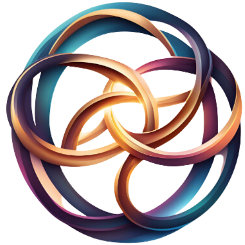

AI-Herkenning
Onze geavanceerde AI herkent alle personen op foto's, zodat je nooit meer eindeloos hoeft te zoeken
Vind, bekijk en deel foto's van alle evenementen binnen enkele seconden
Onze fotografie-opslagoplossing is speciaal ontworpen voor alle evenementen
Onze geavanceerde AI herkent alle personen op foto's, zodat je nooit meer eindeloos hoeft te zoeken
Vind je foto's binnen 200ms - sneller dan ooit tevoren, zelfs tijdens drukke evenementen
Veilig delen met alleen de juiste personen - jij bepaalt wie toegang heeft tot welke foto's
Bekijk en download je foto's vanaf elk apparaat, waar je ook bent
In enkele eenvoudige stappen vind je jouw perfecte moment
Fotografen uploaden foto's van het evenement, die automatisch worden gecategoriseerd
Filter op datum, locatie of type sportevenement om de juiste collectie te vinden
Onze AI herkent jou op de foto's, zodat je direct jouw eigen momenten vindt
Bewaar je favoriete foto's in hoge kwaliteit of deel ze direct met vrienden en familie
Bekijk de nieuwste uploads van onze community en fotografen. Swipe of klik voor meer!
Een revolutionair spaarsysteem. Verdien coins door actief te zijn en wissel ze in voor unieke voordelen. Ideaal voor wie liever niet (altijd) betaalt! Lees meer
Het platform waar artiesten, fotografen, AI en klanten samenkomen. Ontdek, deel, verkoop en creëer samen. Lees meer
De Pjotters-Company is opgericht door Pieter Oosterling. Hij kwam er achter dat veel diensten veel geld kosten om er gebruik van te maken als consument. Daarom bedacht hij verschillende bedrijven als:
Deze bedrijven hebben allemaal één ding gemeen: zij zijn ontstaan om te zorgen dat iedereen gelijk is en dat iedereen de mogelijkheden heeft om te gebruiken.
Om deze reden is er altijd een gratis optie bij deze bedrijven!
De Pjotters-Company verdiept zicht niet alleen in online bedrijven, want binnenkort komt Rowchoachs wat roeiers helpt bij het vast leggen van elke meter voor een goedkope prijs. Ook komt er een High-Tech product genaamt: ZipZop-AR
Dit is een AR-bril waar je veel informatie kan zien, videos op kan kijken maar ook chats mee kan sturen met gebruik van je stem (Pjotters AI) en gebruik van je handen (Pjotters Handscan)
De Pjotters-Company is een bedrijf dat zich richt op het zorgvuldig ontwikkelen van nieuwe producten en diensten die iedereen gelijk kunnen gebruiken.
De Pjotters-Company - Iedereen gelijk - Iedereen goedkoop!

MediaMatch is ontstaan door Pieter Oosterling, een gepassioneerde jeugdroeier bij DDS. Na talloze wedstrijden ervaarde hij de frustratie van het doorzoeken van duizenden foto's op verschillende websites, waarbij hij vaak maar een klein deel van de foto's kon vinden waarop hij stond.
Deze ervaring inspireerde hem om samen met Pjotters-Company een innovatieve oplossing te ontwikkelen die gebruik maakt van AI-technologie om sporters automatisch te herkennen in evenementfoto's.
Vandaag kunnen sporters hun foto's vinden binnen enkele seconden, met een nauwkeurigheid van meer dan 90%!
Jaren later hebben we onze Pjotters-AI getraind zodat we de service beschikbaar kunnen stellen voor iedereen.
En zo voldoen we aan Pjotters-Company's belangrijkste missie, om een service aan te bieden die gratis is en voor iedereen beschikbaar is zodat iedereen gelijk is.
Foto's in Database
Herkenningsnauwkeurigheid
Zoeksnelheid
Fotografen